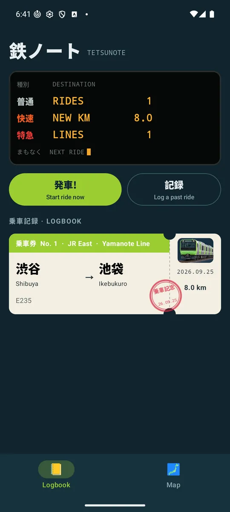
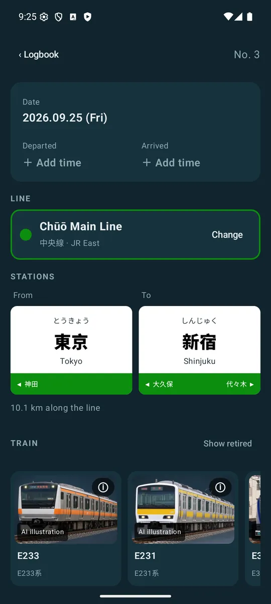
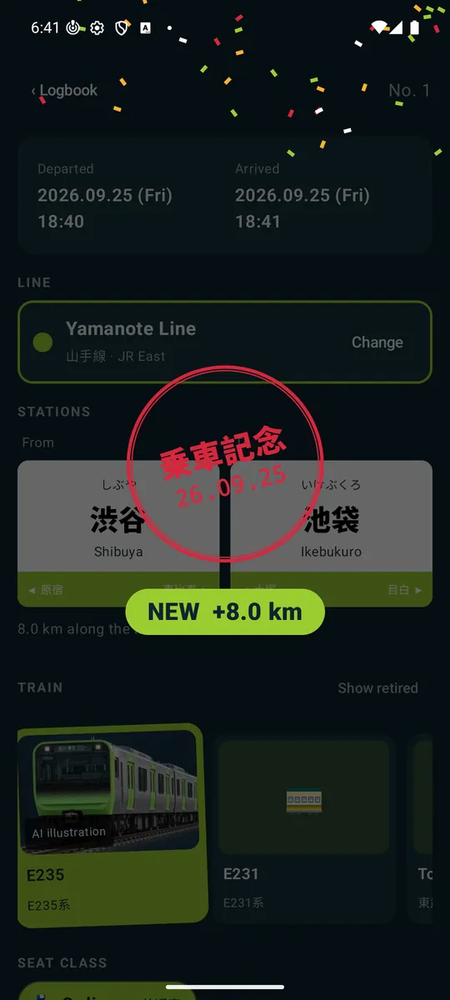
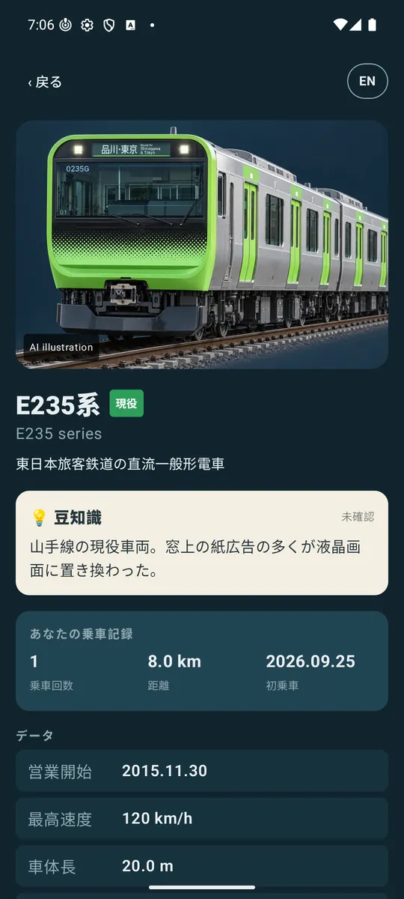
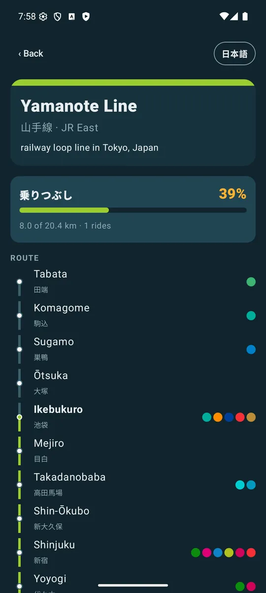
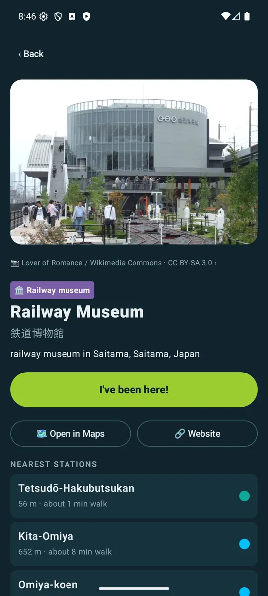

乗った列車を、全部ノートに。 Every train you ride, in one notebook.
日本の鉄道のための乗車記録アプリ。乗った区間、車両、座席、駅弁、写真を記録して、乗りつぶし地図を塗っていこう。 A railway logbook for Japan. Log the line, the stations, the train and your seat, add photos and ekiben, and watch your 乗りつぶし map fill in.

路線と区間を選ぶだけで営業キロを計算。乗車中は「発車!」、到着したら乗車記念スタンプ。Pick the line and stations and the km work themselves out. Tap 発車! on the train; arriving stamps your ticket.
255形式。乗った・見た車両がカラーに。車両ごとの豆知識、データ、写真、あなたの乗車歴。255 models that turn from grey to colour as you ride or see them, each with facts, photos and your history with it.
全国594路線。乗った区間がラインカラーで光り、路線ごとの達成率がわかる。All 594 lines in Japan. What you've ridden glows in each line's colour, with completion for every line.
ドクターイエロー、East i、ALFA-X、SL…見かけた特別な列車を記録。Doctor Yellow, East i, ALFA-X, steam specials: log the special trains you spot.
鉄道博物館、リニア見学センターなど。最寄り駅と徒歩時間、沿線のおすすめも。Railway museums, the maglev centre and more, with the nearest station and walk, and suggestions along your ride.
アカウント不要、広告なし。位置情報は乗車中だけ（使わない設定も可）、端末の外には出ません。鉄道データを一度読み込めばオフラインで使えます。No account, no ads. Location is used only during a ride (or not at all, if you prefer) and never leaves your phone. Once the railway data has loaded, it works offline.





tetsunote.apk を開く。Open the downloaded tetsunote.apk.Google Play 版ではなく、直接配布している試験版です。新しい版は同じ署名なので、上書きインストールで記録はそのまま残ります。 This is an early test build shared directly, not through Google Play. New versions carry the same signature, so installing over the top keeps your log.
SHA-256 cbd332e09d8dc81a930053415ed54192dd91f7c425648cc06b03949d0608f657
署名証明書Signing certificate SHA-256
e89837f4f4999d6d023ec6dd3eec423a84d178108a9a97c3420bfc603cd49258
すべてのリリースAll releases
鉄道データはオープンデータとして公開しています：The railway data is open: tetsunote-api · 鉄道アトラスrailway atlas